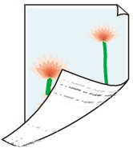

-
Check 1: Did you confirm the paper and print quality settings?
-
Check 2: Perform the Bottom Plate Cleaning to clean the inside of the machine.
 Cleaning the Inside of the Machine (Bottom Plate Cleaning)
Cleaning the Inside of the Machine (Bottom Plate Cleaning) Note
Note-
When performing borderless printing, duplex printing, or too much printing, the inside may become stained with ink.
-